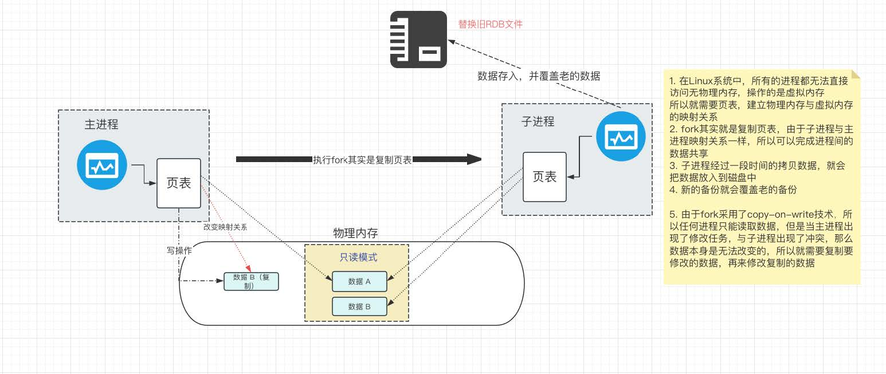
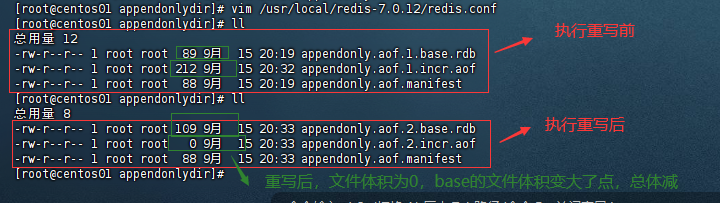
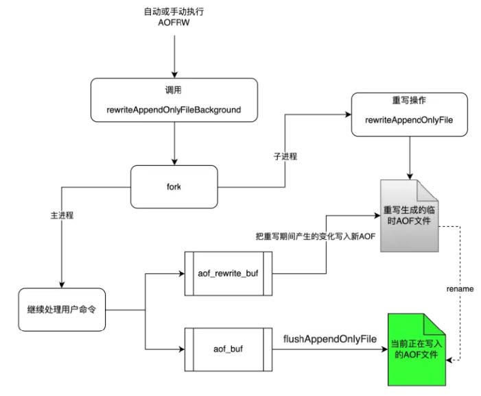

Redis是内存数据库，所以如果不把数据保存到磁盘上，服务器⼀旦进程退出，或者断电，数据就会丢失，所以Redis提供了持久化功能
RDB（Redis 数据库）
RDB的介绍
RDB持久化是通过创建数据的快照实现的。具体来说，Redis会在指定的时间间隔内，将内存中的数据集快照写⼊磁盘，也就是创建了⼀个数据集的副本。
这个时间间隔可以通过”save”配置选项进⾏设置（配置发文件：redis.conf），如”save 900 1”表示如果900秒内有⾄少1个key变化，则创建⼀个snapshots快照。
RDB是Redis默认的持久化⽅式，主要优点是能最⼤化Redis的性能，并且⽣成的RDB⽂件⾮常适合⽤于全量复制、数据备份等场景
rdb保存⽂件：dump.rdb
RDB触发条件
默认出发时间：在服务停⽌时
⾃动触发
stop-writes-on-bgsave-erfor yes #持久化如果出错，是否还需要继续⼯作！
rdbcompression yes #是否压缩rdb ⽂件，需要消耗⼀些Cpu资源！
rdbchecksum yes #保存rdb⽂件的时候，进⾏错误的检查校验！
dbfilename dump.rdb #rdb⽂件名称
dir./ #rdb ⽂件保存的⽬录！ 这里的最好把路径写死
当你看到
dir ./这样的配置时，它意味着Redis的持久化文件（包括dump.rdb）将被保存在Redis服务器进程启动时的当前工作目录下。这里的./是一个UNIX/Linux路径表示方式，它代表“当前目录”或“当前工作目录”。所以，如果你的Redis服务器是在/var/redis目录下启动的，那么dump.rdb文件将会保存在/var/redis目录下，除非你在Redis配置文件中通过dir配置项指定了其他路径。
由于我是在根目录启动的redis服务，dump.rdb文件被存在了根目录
[root@centos01 redis-7.0.12]# find / -name dump.rdb
/dump.rdb
以下做一些测试：
修改配置：
save 5 2 dbfilename testdunmp.rdb dir /usr/local/bin重启redis：
systemctl restart redis， 发现之前存的值，都没有了127.0.0.1:6379> keys * (empty array)这是因为每次redis重启服务的时候，都会读取备份文件(我们配置的
dbfilename testdunmp.rdb)来恢复数据存入一些值
127.0.0.1:6379> set aaa 1 OK 127.0.0.1:6379> set bbb 2 OK 127.0.0.1:6379> set ccc 3 OK 127.0.0.1:6379>发现在
/usr/local/bin目录下，多了testdunmp.rdb[root@centos01 bin]# ll 总用量 21572 -rwxr-xr-x 1 root root 5206520 9月 9 09:39 redis-benchmark lrwxrwxrwx 1 root root 12 9月 9 09:39 redis-check-aof -> redis-server lrwxrwxrwx 1 root root 12 9月 9 09:39 redis-check-rdb -> redis-server -rwxr-xr-x 1 root root 5423928 9月 9 09:39 redis-cli -rw-r--r-- 1 root root 1612 9月 15 19:04 redis.log lrwxrwxrwx 1 root root 12 9月 9 09:39 redis-sentinel -> redis-server -rwxr-xr-x 1 root root 11440368 9月 9 09:39 redis-server -rw-r--r-- 1 root root 108 9月 15 19:04 testdunmp.rdb
总结
- 当我们redis⼀旦出现问题，服务重启，服务关闭以后，再次启动时就会读取备份⽂件，恢复数据。
- 为了避免出现备份被删除或者丢失的问题，⼀般情况下我们会定时把redis中的备份数据迁移到别处以防⽌数据丢失。
- 还有⼀点要注意：设置时间不能太短，加⼊1秒就备份数据，会导致⼤量的磁盘IO，造成磁盘压⼒
⼿动触发：save & bgsave
127.0.0.1:6379> set aa 11 #保存数据
OK
127.0.0.1:6379> save # 主进程保存会阻塞
OK
127.0.0.1:6379> keys *
1) "aa"
127.0.0.1:6379> bgsave # fork⼦进程不会影响主进程做其他⼯作
Background saving started # ⼦进程开启提示
127.0.0.1:6379>
通过save bgsave命令能够⼿动的备份数据
- 在redis中使⽤save命令，此命令有Redis主进程执⾏，会阻塞所有命令，所以这个⽅式如果数据量⼤的时候会导致效率较慢
- 推荐执⾏bgsave，此命令会开启⼦进程执⾏rdb，避免主进程受影响 （⽣产必须⽤这个命令）
- bgsave命令：redis会在后台异步进⾏快照操作，不阻塞快照同时还可以相应客户端请求，该触发⽅式会fork⼀个⼦进程由⼦进程复制持久化过程
fork
主进程执⾏读操作时，⼦进程共享内存
主进程⼀旦执⾏修改操作时，需要拷⻉对应数据，执⾏写操作
RDB问题
- 执⾏间隔时间⻓，两次RDB之前可能存在数据丢失⻛险
- fork⼦进程、压缩、写出RDB⽂件都⽐较耗时
AOF（仅追加⽂件）
AOF的介绍
AOF：Redis提供的⼀种持久化策略，也被称为追加模式或⽇志模式。Redis处理的每⼀个写命令都会记录在AOF⽂件，可以看做时命令⽇志⽂件。
由于在使⽤AOF持久化⽅式时，redis会将每⼀个收到的命令都通过write函数追加到⽂件中（默认appendonly.aof）。当redis重启时会通过重新执⾏⽂件中保存的写命令在内存中重建整个数据库内容。
AOF配置
⾸先AOF默认是关闭的，需要修改redis.conf配置⽂件来开启
appendonly yes #是否开启AOF 默认no appendfilename "appendonly.aof" # AOF⽂件名 appenddirname "appendonlydir" #Redis7新增,⽤于储存所有AOF⽂件的⽬录名称AOF命令记录频率
appendfsync可以通过redis.conf配置⽂件控制appendfsync always #表示每执⾏⼀次写命令，⽴即记录到AOF⽂件 性能最差 appendfsync everysec #写命令执⾏完先放⼊AOF缓冲区，然后表示每隔1秒钟将缓冲区数据写⼊AOF⽂件，默认（最多丢失1秒内的数据） appendfsync no #写命令执⾏完放⼊AOF缓冲区，由操作系统决定何时将缓冲区内容写入磁盘由此可以看出always安全性最⾼性能最差，以此类推逐步提⾼性能减少安全性
演示
⾸先注释掉之前的RDB，需要注释掉之前的策略，并且编写save “”表示禁⽤RDB
# save 5 2 save ""但是，在我重启redis之后，报了如下错误：
[root@centos01 ~]# systemctl restart redis Job for redis.service failed because the control process exited with error code. See "systemctl status redis.service" and "journalctl -xe" for details. [root@centos01 ~]# systemctl status redis.service ● redis.service - redis-server Loaded: loaded (/etc/systemd/system/redis.service; enabled; vendor preset: disabled) Active: failed (Result: exit-code) since 日 2024-09-15 19:52:29 CST; 56s ago Process: 130910 ExecStart=/usr/local/bin/redis-server /usr/local/redis-7.0.12/redis.conf (code=exited, status=1/FAILURE) Main PID: 39035 (code=exited, status=0/SUCCESS) 9月 15 19:52:29 centos01 systemd[1]: Starting redis-server... 9月 15 19:52:29 centos01 redis-server[130910]: *** FATAL CONFIG FILE ERROR (Redis 7.0.12) *** 9月 15 19:52:29 centos01 redis-server[130910]: Reading the configuration file, at line 430 9月 15 19:52:29 centos01 redis-server[130910]: >>> 'save "" # 表示禁止使用RDB' 9月 15 19:52:29 centos01 redis-server[130910]: Invalid save parameters 9月 15 19:52:29 centos01 systemd[1]: redis.service: control process exited, code=exited status=1 9月 15 19:52:29 centos01 systemd[1]: Failed to start redis-server. 9月 15 19:52:29 centos01 systemd[1]: Unit redis.service entered failed state. 9月 15 19:52:29 centos01 systemd[1]: redis.service failed.这是因为我在配置后面加了
# 表示禁止使用RDB找到AOF配置
appendonly yes #默认no可以设置保存AOF⽂件的⽬录名称，⽂件会保存在RDB你设置的⽬录中下的
appenddirname⽬录中appenddirname "appendonlydir" #Redis7新增,⽤于储存所有AOF⽂件的⽬录名称连接redis，并且新增数据
[root@centos01 ~]# redis-cli -p 6379 -a 753159 Warning: Using a password with '-a' or '-u' option on the command line interface may not be safe. 127.0.0.1:6379> keys * (empty array) 127.0.0.1:6379> set a 1 OK 127.0.0.1:6379> set b 2 OK 127.0.0.1:6379> set c 3 OK 127.0.0.1:6379>查看新增的文件
[root@centos01 ~]# cd /usr/local/bin/ [root@centos01 bin]# ll 总用量 21576 drwxr-xr-x 2 root root 103 9月 15 20:19 appendonlydir -rwxr-xr-x 1 root root 5206520 9月 9 09:39 redis-benchmark lrwxrwxrwx 1 root root 12 9月 9 09:39 redis-check-aof -> redis-server lrwxrwxrwx 1 root root 12 9月 9 09:39 redis-check-rdb -> redis-server -rwxr-xr-x 1 root root 5423928 9月 9 09:39 redis-cli -rw-r--r-- 1 root root 5883 9月 15 20:19 redis.log lrwxrwxrwx 1 root root 12 9月 9 09:39 redis-sentinel -> redis-server -rwxr-xr-x 1 root root 11440368 9月 9 09:39 redis-server -rw-r--r-- 1 root root 129 9月 15 19:52 testdunmp.rdb [root@centos01 bin]# cd appendonlydir/ [root@centos01 appendonlydir]# ls appendonly.aof.1.base.rdb appendonly.aof.1.incr.aof appendonly.aof.manifest [root@centos01 appendonlydir]# ll 总用量 12 -rw-r--r-- 1 root root 89 9月 15 20:19 appendonly.aof.1.base.rdb -rw-r--r-- 1 root root 104 9月 15 20:25 appendonly.aof.1.incr.aof -rw-r--r-- 1 root root 88 9月 15 20:19 appendonly.aof.manifest
AOFRW（多部分AOF机制）
从Redis 7.0.0开始，Redis使⽤多部分AOF机制（AOFRW）。即把原来的单个AOF⽂件拆分为基础⽂件（最多⼀个）和增量⽂件（可能不⽌⼀个）。基础⽂件表示重写AOF 时存在的数据的初始（RDB 或 AOF 格式）快照。增量⽂件包含⾃上次创建基本AOF ⽂件以来的增量更改。所有这些⽂件都放在单独的⽬录中，并由清单⽂件跟踪，这是为了解决随着Redis处理的写命令增多，AOF⽂件也会变得越来越⼤，命令回放的时间也会增多的问题。
BASE：表示基础的AOF，它⼀般由⼦进程通过重写产⽣，最多只有⼀个INCR：表示增量AOF，它⼀般会在AOFRW开始创建，可能存在多个HISTORY：表示历史的AOF，它由BASE和INCR AOF变化⽽来，每次AOFRW成功完成时，本次AOFRW之前对应的BASE和INCR都变成HISTORY，此类型AOF会被Redis⾃动删除
触发方式一：⾃动
此时为两种条件同时满⾜，才会触发机制
根据上次重写后的AOF⽂件⼤⼩，判断当前AOF⽂件⼤⼩是否增⻓了1倍
重新时需要满⾜设定的⽂件⼤⼩默认 64mb
相关的配置：
# Automatic rewrite of the append only file. # Redis is able to automatically rewrite the log file implicitly calling # BGREWRITEAOF when the AOF log size grows by the specified percentage. # # This is how it works: Redis remembers the size of the AOF file after the # latest rewrite (if no rewrite has happened since the restart, the size of # the AOF at startup is used). # # This base size is compared to the current size. If the current size is # bigger than the specified percentage, the rewrite is triggered. Also # you need to specify a minimal size for the AOF file to be rewritten, this # is useful to avoid rewriting the AOF file even if the percentage increase # is reached but it is still pretty small. # # Specify a percentage of zero in order to disable the automatic AOF # rewrite feature. auto-aof-rewrite-percentage 100 auto-aof-rewrite-min-size 64mb
触发方式二：⼿动
执⾏命令：bgrewriteaof命令
我们做一些重复操作
127.0.0.1:6379> set a 1
OK
127.0.0.1:6379> set b 2
OK
127.0.0.1:6379> set c 3
OK
################### 开始重复操作
127.0.0.1:6379> set c 4
OK
127.0.0.1:6379> set c 5
OK
127.0.0.1:6379> set c 6
OK
127.0.0.1:6379> set c 7
OK
#### 执行重写
127.0.0.1:6379> bgrewriteaof
再看文件大小，体会重写
原理
- 触发重写机制以后，Redis会创建⼀个⼦进程，此进程会读取现有的AOF⽂件，将包含的指令压缩并写⼊到临时⽂件中
- 此时主进程如果收到新的写指令，会把这些新指令累计到缓存区中，同时也会写⼊到原有的AOF⽂件中，保证重写过程失败，原有⽂件依旧可⽤
- 当⼦进程重写完成后，主进程会把重写期间产⽣的变化写⼊到新的ADF⽂件中
- 追加结束之后，新的ADF会覆盖⽼的ADF
RDB与AOF混合持久化
⼀般情况下，如果您想要关系型数据库提供的数据安全程度相当的数据安全性，则应该使⽤这两种持久性⽅法。
如果您⾮常关⼼数据，但仍然可以忍受灾难发⽣时⼏分钟的数据丢失，那么您可以简单地单独使⽤ RDB。
有许多⽤户单独使⽤ AOF，但我们不⿎励这样做，因为时不时地拥有 RDB 快照对于进⾏数据库备份、更快地重新启动以及在 AOF 引擎出现错误时是⼀个好主意。
注意：同时开启RDB和AOF持久化时，重启时只会加载AOF⽂件，不会加载RDB⽂件，除⾮开始判断发现AOF⽂件不存在，会找RDB⽂件
开启方式：设置redis.conf配置⽂件中的
aof-use-rdb-preamble yes #开启混合模式 默认为yes
总结：
- RDB⽤做全量持久化
- AOF做增量持久化
- 使⽤RDB进⾏快照存储，使⽤AOF持久化记录所有写操作，当重写策略满⾜或⼿动触发时，将最新的数据储存为RDB
转载请注明来源，欢迎对文章中的引用来源进行考证，欢迎指出任何有错误或不够清晰的表达。可以在下面评论区评论，也可以邮件至 1909773034@qq.com